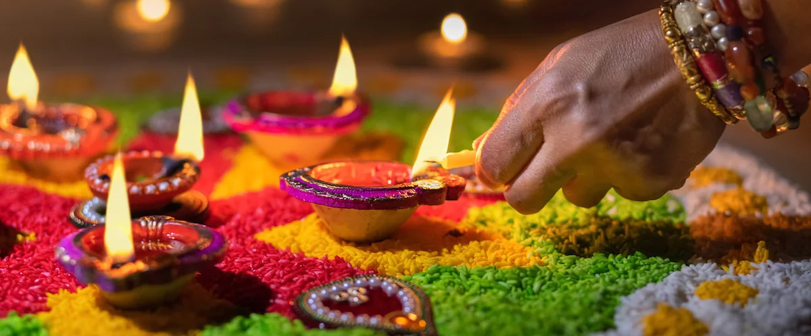

DIWALI
HISTORY
Diwali, also known as Deepavali, is a vibrant Hindu festival of lights celebrated annually, typically in autumn. Its history is multifaceted, with roots in ancient India and diverse regional interpretations. While many associate it with the triumph of good over evil, light over darkness, and knowledge over ignorance, specific legends and practices vary across regions.Diwali, also known as the Festival of Lights, has a rich history that can be traced back to ancient India. It likely began as an important harvest festival and has various legends associated with its origin, including the celebration of the marriage of Lakshmi, the goddess of wealth, with Lord Vishnu.
Learn Religions
The festival symbolizes the victory of light over darkness and is celebrated by Hindus, Sikhs, and Jains, each with their own historical significance. For Sikhs, it marks the return of Guru Hargobind to Amritsar from captivity. Diwali spans five days and is rooted in ancient harvest festivals of South Asia, emphasizing new beginnings and the supremacy of knowledge over ignorance.
Overall, Diwali represents a time of joy, reflection, and community celebration, with its origins deeply embedded in the cultural and religious fabric of India

SIGNIFICANCE
Origins and Historical Context
Diwali is believed to have originated as an ancient harvest festival in South Asia, celebrating the end of the harvest season and the beginning of the new year. The festival is linked to various legends and religious texts, making it a multifaceted celebration across different cultures and religions.
Legends Associated with Diwali
Return of Lord Rama:
One of the most prominent stories associated with Diwali is from the Hindu epic, the Ramayana. It commemorates the return of Lord Rama, his wife Sita, and brother Lakshmana to their kingdom of Ayodhya after defeating the demon king Ravana. The people of Ayodhya celebrated their return by lighting oil lamps (diyas) to illuminate the city, symbolizing the triumph of good over evil.
Worship of Goddess Lakshmi: Diwali is also celebrated as the birthday of Goddess Lakshmi, the deity of wealth and prosperity. Many devotees perform Lakshmi Puja during the festival, seeking blessings for prosperity in the coming year.
Jain Significance:
For Jains, Diwali marks the occasion of Mahavira's nirvana, the final liberation of the 24th Tirthankara. The festival emphasizes spiritual purity and the escape from the cycle of birth and death.
Sikh Observance: Sikhs celebrate Bandi Chhor Divas during Diwali, commemorating the release of Guru Hargobind from imprisonment by the Mughal emperor Jahangir. This day symbolizes freedom and justice.
2
Cultural and Social Impact
Diwali is not only a religious festival but also a significant cultural event that fosters community bonding and family ties. The festival is marked by various rituals, including cleaning homes, decorating with lights, exchanging gifts, and preparing festive meals. It serves as a time for renewal and unity among families and communities.
Economic Significance
The festival also has a substantial economic impact, as it boosts retail sales and economic activity. People engage in shopping for new clothes, gifts, and decorations, leading to increased demand in various sectors, including handicrafts and textiles.
StudyIQ
In summary, Diwali's historical significance lies in its rich tapestry of legends, cultural practices, and its role in promoting values of light, hope, and the triumph of good over evil across different communities and religions. The festival continues to be a vital part of cultural identity and social cohesion in India and among the Indian diaspora worldwide.